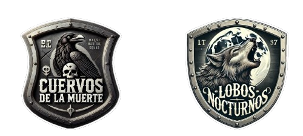

Operación
Niebla
de Otoño
Un grupo insurgente llamado “CUERVOS DE LA MUERTE“ ha tomado el control de una región estratégica en la frontera, con el objetivo de desestabilizar a Costa Rica. Han capturado a un alto oficial del gobierno y planean lanzar ataques con morteros sobre un hospital militar para causar caos, además de detonar una bomba de gran magnitud para asegurar su dominio territorial. El equipo insurgente tiene 16 horas para defender su territorio y completar sus objetivos antes de que "LOBOS NOCTURNOS" los neutralice.
